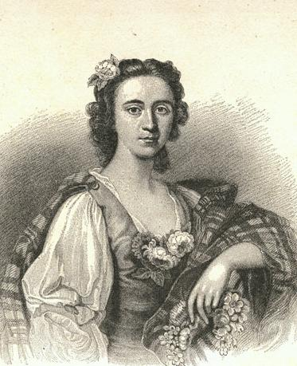

Sweet is the Rose
Flora's Lament 2
Tune
Scottish, Slow Strathspey."Sweet is the lass that dwells among the heather"Published (and composed ?) by Alexander McGlashan(*) (A Collection of Reels) c.1786
Sequenced by Ch.Souchon


Sequenced by Ch.Souchon

|
1. Sweet is the rose that’s budding on yon thorn,
Down in yon valley sae cheery, But sweeter the flower that does my bosom adorn, And springs from the breast of my dearie. The lav’rock may whistle and sing o’er the lea, Wi’ a’ its sweet strains sae rarely; But when will they bring such joys to me, As the voice of my ain handsome Charlie. 2. The tears stole gently down frae my een, Nae danger on earth then could fear me; My throbbing heart beat, and I heaved a sigh, When the lad that I loved was near me. Fu’ trig wi’ his bonnet, sae bonny and blue, And his tartan dress sae rarely; A heart that was leal, and to me ever true, Was aye in the breast o’ my Charlie. 3. His long-quartered shoon, and his buckles sae clear, On his shoulder was knotted his plaidie: Naething on earth was to me half sae dear, As the sight o’ my ain Highland laddie. Red were his cheeks, and flaxen his hair, Hanging down on his shoulders sae rarely; A blink o’ his e’e, wi’ a smile, banished care, Sae handsome and neat was my Charlie. 4. My Charlie, ochon! was the flower o’ them a’; F or the loss of my mate I am eerie; For when that the pibroch began for to blaw, ‘Twas then that I quite lost my dearie. O wae’s me, alas! wi’ their slaughter and war, ‘Twas then that he gaed awa’ fairly; And broad is the sea that parts me afar Frae love and my ain handsome Charlie. 5. Ance my saft hours wi’ pleasure were blest, But now they are dull and eerie; And when on slumber’s soft pillow I rest, I behold the sweet shad o’ my dearie. But as long as I love, and as long as I breathe, I will sing o’ his memory dearly, Till love is united in the cold arms of death, Poor Flora shall mourn for her Charlie. |
1. Quelle est belle la rose qui bourgeonne
Sur sa tige épineuse au fond de la vallée! Plus belle encore est la fleur qui décore, Mon corsage et que mon ami m'a donnée. L'alouette peut bien lancer ses trilles, Les parer de ses accents les plus jolis; Il en faut plus pour que mes yeux brillent De joie, comme lorsque j'entendais Charlie. 2. Mes yeus s'emplissaient de furtives larmes, Je me savais à l'abri de tous les dangers; Mais comme mon coeur battait la chamade, Lorsque j'étais près de celui que j'aimais! Son bonnet bleu lui donnait fière allure, Il était vêtu comme les gens d'ici; C'est un coeur loyal, plein de droiture, Qui battait dans la poitrine de Charlie. 3. De hauts souliers de cuir ornés de boucles, Et, noué sur l'épaule, le plaid de tartan: Nulle chose au monde ne me fut si douce, Que la vue du jeune héros des Highlands. Des joues écarlates et des boucles blondes Encadraient le visage de l'ami ; Un regard, un sourire à la ronde, Et tu dissipais tous mes soucis, Charlie. 4. Oui, Charlie brillait par ses vertus insignes; Et sa perte me plonge dans le désespoir; Car quand retentit le pibroch sur la rive, J'ai su que je ne devrai plus le revoir. Pauvre de moi, maudite soit la guerre, C'est alors que loin de moi Charles est parti; Là-bas, par delà l'océan, la mer Demeure mon amour, mon noble Charlie. 5. Et de tant d'heures emplies de délice, Il ne me reste que chagrin et désespoir; Et lorsqu'enfin le sommeil me visite , C'est lui que dans mes rêves je crois revoir. Tant que je l'aime, tant que je respire, C'est pour lui que je chante ma mélodie. Jusqu'à ce que la mort les unisse, L'infortunée Flora pleurera Charlie. Traduction Christian Souchon (c) 2005 |
|
(*) Alexander (King) McGlashan was a musician who lived in Edinburgh. On 15th march 1780 he published his first collection of Strathspey Reels with a Bass for the Violincello or Harpsichord.
In September of the following year he published a collection of Scots Measures, Hornpipes, Jigs, Allemandes, Cotillons, and the Fashionable Country Dances. In May 1786, he published a "Second Collection of Strathspeys, Athole Reels &c. with a Bass for the Violoncello or Harpsichord.” Nath.Gow received lessons from McGlashan on the violin. McGlashan died in May 1797 and is buried in Greyfriar’s Churchyard. McGlashan is reputed to have been an excellent musician and composer, but in his works, he makes no claim to this latter appellation. |
(*)Alexander (King) McGlashan était un musicien qui vécut à Edimbourg. Le 15 mars 1780 il publia sa première collection de "Reels de Strathspey avec basse pour violoncelle ou clavecin.
En septembre de l'année suivante, il publia une collection de "Scots Measures, Hornpipes, Gigues, Allemandes, Cotillons, et Contredanses à la mode". En mai 1786, il publia une "Seconde Collection de Strathspeys, Reels d'Athol etc. avec basse pour violoncelle ou clavecin.” Nath.Gow prit des leçons de violon auprès de McGlashan. McGlashan mourut en mai 1797 et est enterré au Greyfriar’s Churchyard. McGlashan jouit d'une solide réputation de musicien et de compositeur, mais dans ses oeuvres, il ne se prévaut jamais de cette seconde appellation. |